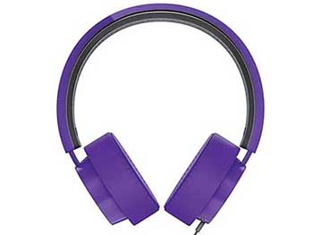
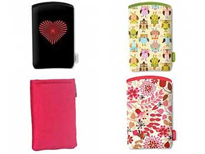
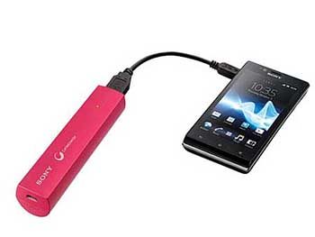

Tu celular también puede ser chic
Conocé los teléfonos y accesorios con girly look para hacer tu día a día más fácil y con estilo. ¡La tecnología no es sólo negra y plateada!
¿Sos de fijarte en el color y la forma de tu celular? - Foto: Corbis
Los hombres y las mujeres no nos vestimos igual, y tampoco elegimos lo mismo a la hora de pensar en tecnología. Por suerte, en el mercado hay modelos de celulares y accesorios muy femeninos y al alcance de todo presupuesto. Te mostramos algunos:
Celus
Hay dos marcas de celulares que pensaron en nosotras a la hora de definir sus diseños:
Nokia nos acerca algunas lindas opciones:
Por un lado, el Nokia , con pantalla de 2.4 pulgadas, cámara de 2PM y teclado QWERTY físico.
Este modelo también se puede conseguir lookeado con imágenes de la marca 47 Street. Liberado está a $799, y con línea a $499.
Una opción un poco más avanzada es el Nokia Asha
311 , que con línea se consigue a $499. Tiene pantalla touch de 3 pulgadas,
cámara de 3.2MP, procesador de 1GHz, GPS, y microSD.
Para las más exigentes, está el Nokia
, que con línea cuesta $999999 y tiene un procesador SnapDragon S4 de doble núcleo
y 1 GHz y cámara con enfoque automático de 5MP.
Samsung también pensó en nosotras y tiene
opciones que, además de atractivas, son poderosas!
El Samsung Galaxy Y , tiene procesador a 832 mHz y cámara de 2MP. Liberado
cuesta $1299.
Otro celu muy bueno, con teclado QUERTY físico, es el Samsung Chat 5330 , a
$1599 sin línea.
El smartphone de más alta gama con girly style de esta lista es el Samsung Galaxy
SIII Red , que liberado cuesta $5199.
Audio
Cuando tenemos que ir de un lado a otro, escuchar múica con el celu es una salvación! Y si nuestros auriculares además de atender llamadas, son lindos, mucho mejor. Los auriculares Philips SHL5205PP tienen almohadillas ajustables con cancelación de ruido, cable de 1,2 m, y micrófono integrado para hacer llamadas. Cuestan $349.
Fundas
Las fundas Wrapp son de neoprene, fácilmente adaptables a cualquier celu
ya que vienen en varios tamaños. Tienen muchos colores, y en cualquiera de ellos esta funda
cuesta $39.
Si tenés un Samsung Galaxy S4 , una buena opción es la funda
original, que permite hablar con la tapa cerrada, y no hace más gordo el celu, ya que
sustituye la tapa trasera. Se consigue por $249. Esta funda también se consigue para
otros modelos de Samsung Galaxy.
También para el Samsung Galaxy S4 podés comprar por $159 una carcasa trasera de
plástico.
La yapa!
Si estás fuera de tu casa todo el día, necesitas algo que salve la batería de tu celular! .Qué que un cargador portátil? El Sony USB CP-ELSP//C ULA tiene batería Ion-Litio integrada, capacidad de 2000mAh, y puede cargar tu smartphone por completo una vez. Lo podés comprar por $180 y sirve para cualquier marca de celular.